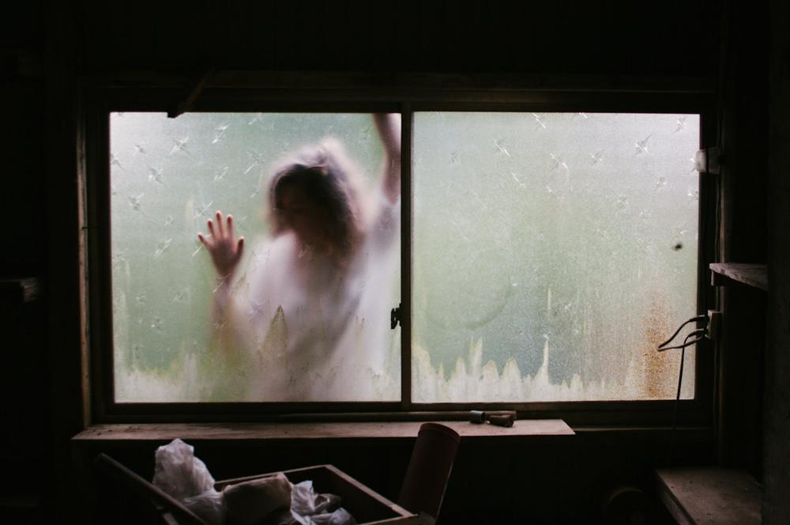
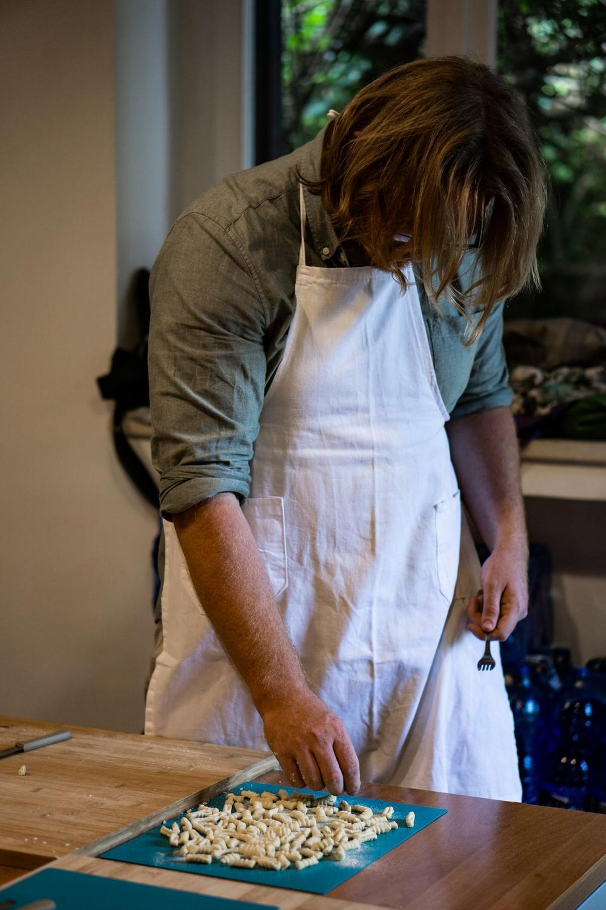
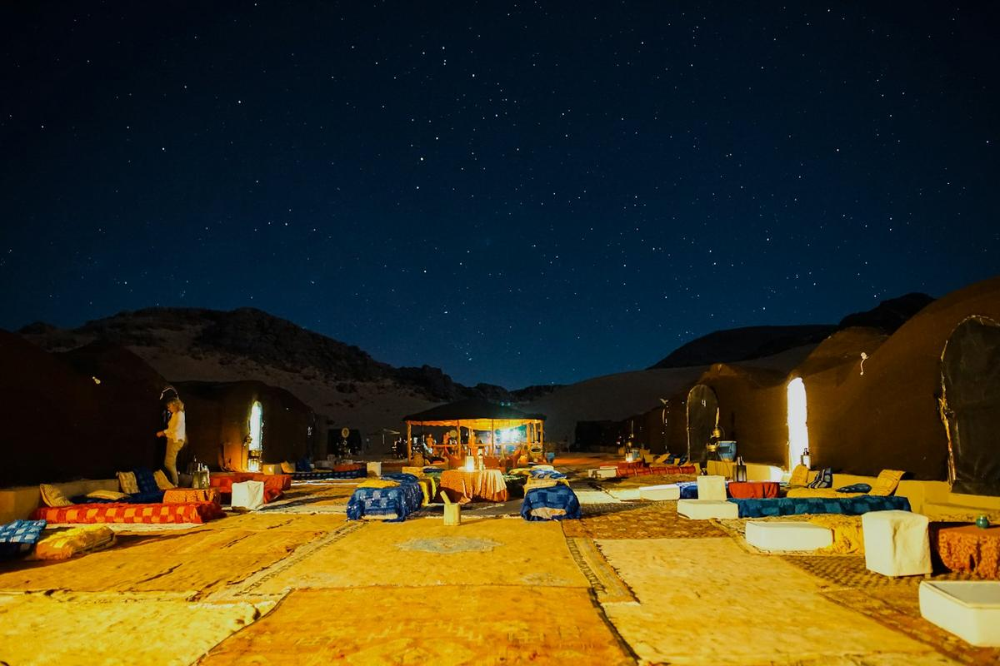
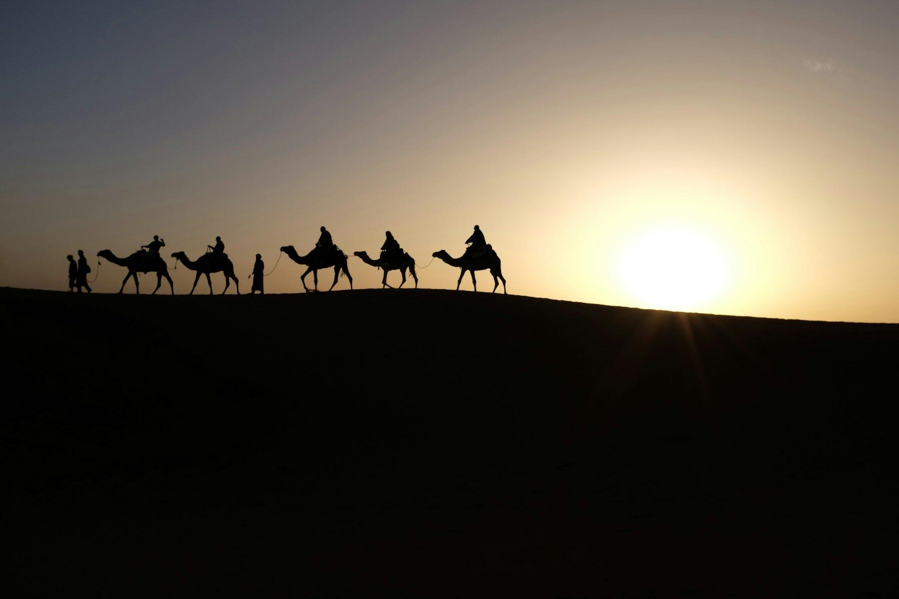
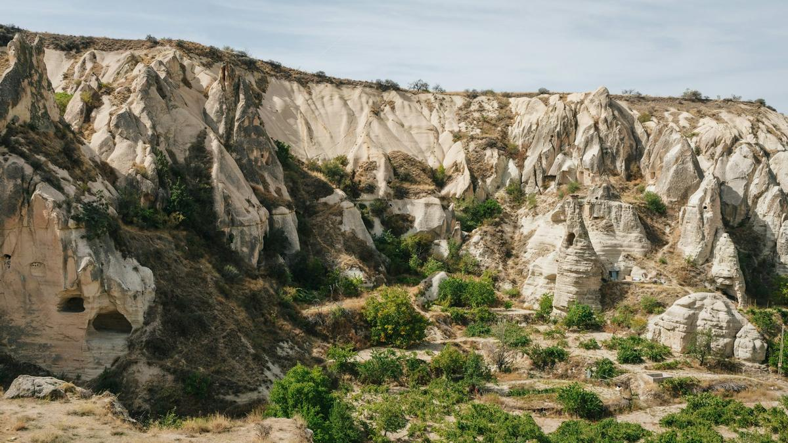

Ideas para las campañas
Carteles en el metro y en la calle, historias, el branding e ideas para hacer crecer la comunidad. El tono: directo, irónico, un poco descarado. Hacemos una pregunta incómoda, admitimos que no tenemos la respuesta y ofrecemos un viaje para buscarla.
Borradores de concepto, para desarrollar con un diseñador.
Carteles en el metro

¿Te acaba de dejar?
No sabemos cómo reconquistarla. Nosotros tampoco.
Mientras tanto, siete días en el Sáhara.
¿No sabes cómo decirle a tu madre que te vas de casa?
Nosotros tampoco.
Mientras tanto, reserva el vuelo. La videollamada se la hacemos todos juntos.

¿Echas de menos los ñoquis con ragú de tu abuela?
No podemos ayudarte.
Pero en Capadocia hacen mantı. Casi iguales. No se lo digas a la abuela.
¿Tu jefe te escribe a las 23?
En el Nilo no hay cobertura.
¿Te da pena?

¿Tienes 1.200 amigos en Instagram?
¿Y a cuántos llamas a las 3 de la mañana?
Bajo las estrellas del Sáhara se hacen de verdad.

¿Tu tía pregunta cuándo te casas?
Nosotros tampoco lo sabemos.
Mientras tanto, una semana en el Nilo. Sin preguntas.

¿Te da miedo viajar solo?
A todos, al principio.
Sales solo, vuelves con doce amigos.

¿Llevas tres años trabajando desde el sofá?
El sofá está estupendo. Tú, un poco menos.
Siete días a pie por el desierto. El wifi está en el riad.
¿Tu padre está deseando ser abuelo?
No es asunto nuestro.
Mientras tanto, un imán de Kirguistán te hará ganar tiempo.
Vallas en la calle

¿Tienes 35 pestañas abiertas en la cabeza?
El desierto te cierra 34.

Todos te dicen que respires.
Nosotros te llevamos donde sale solo.

¿Tu lista de tareas tiene su propia lista de tareas?
En el Sáhara solo hay una: nada.

¿Tu móvil tiene más batería que tú?
Recárgate en el Nilo. Él puede quedarse sin batería.
Stories y redes
¿Año nuevo, mismo tú?
Hagamos algo.
¿Te estás buscando?
No garantizamos nada.
Pero las vistas son increíbles.

¿Dónde has estado este finde?
Nosotros, en caravana.

¿Cumples 30?
Pánico normal.
Celébralo sobre Capadocia, en globo, al amanecer.
¿En el grupo «Vacaciones 2027» nadie escribe desde febrero?
Pasa siempre.
En el nuestro el viaje ya existe. Solo faltan 3 personas para salir.

¿Te descargaste la app de meditación?
Y a los tres días la borraste.
Prueba con el desierto. No se desinstala.
Black Friday y Navidad
La idea: en noviembre todos compran cosas. Nosotros vendemos un sello en un pasaporte de mentira, y la semana en el desierto que lo rodea. Acumular experiencias en lugar de objetos, y hacer el regalo de Navidad ahora, sin correr el 23 de diciembre.
Black Friday: todos compran cosas.
Nosotros vendemos un sello en un pasaporte de mentira.
Y una semana en el Sáhara alrededor de ese sello.

¿Cuántos paquetes te van a llegar esta semana?
El nuestro es uno solo.
Dentro hay un pasaporte. Y una semana en el Sáhara.
¿Cada año compras los regalos el 24 de diciembre a las 18?
Todos lo hacemos.
Este año regala el desierto ahora, en oferta. El 24 a las 18 te tomas el aperitivo.
Tu tía volverá a regalar un perfume.
No podemos impedirlo.
Pero tú puedes regalar un amanecer en el Sáhara.
El regalo que no cabe bajo el árbol.
Cabe en el pasaporte.
El Desert Way en un sobre: pasaporte, primer sello y la fecha para escribir juntos.
En enero el jersey de Navidad ya está en el armario.
El Sáhara no.
Te lo llevas dentro durante años. Desert Way, −200 € hasta el 1 de diciembre.
El regalo: el pasaporte en un sobre
Quien regala el Desert Way recibe en casa un sobre con el pasaporte del Viajero Itinerante, ya sellado, y una tarjeta con su mensaje. La fecha bajo el sello se escribe a mano, el día de la salida.
El descuento y las fechas de los carteles son ejemplos, por decidir juntos.
Los dos viajeros
El corazón de la marca son las dos I del logo: dos personas que caminan juntas. Pueden convertirse en un personaje que cambia de postura y de medio según el viaje, y que firma todo, desde la web hasta el sello del pasaporte.
Logo principal sobre fondo claro.
Versión sobre fondo oscuro.
Para icono de la app, foto de perfil en redes, favicon, sellos.
Las posturas
El mismo personaje acompaña cada viaje y cada momento: camina, medita, sube al dromedario, salta de alegría, se duerme bajo las estrellas. Sin brazos, como en el logo. Para que lo redibuje un ilustrador con un trazo único.
Colores
Cuatro colores principales, siempre. Cada destino tiene un color de acento que vive solo en su página y en sus campañas.
Tipografías
Títulos, logo, carteles. Redonda, llena, simpática.
Textos e interfaz. Clara y legible.
Mapas antiguos y el "trabajo interior" de cada día.
Aplicaciones
El sello redondo
Uno por cada retiro, con los dos viajeros en el centro.
El sello con la fecha
El viaje va impreso, la fecha la escribimos a mano en el pasaporte.
La bolsa de tela
El regalo de bienvenida de cada viaje.
Los stickers
El logo en botellas y portátiles: quien lo ve descubre la marca.
El tono de voz
- Directo, irónico, humano
- Admitimos lo que no sabemos
- Hablamos como un amigo que ya ha viajado
- Frases de gurú y promesas de iluminación
- Palabras técnicas sin explicación
- El típico tono pulido de agencia de viajes
Otras ideas para hacer crecer la comunidad
El pasaporte del Viajero Itinerante
Un pasaporte de papel con un sello por cada retiro. Al tercer sello, descuento en el siguiente viaje. Se colecciona, se fotografía, se comparte.
Trae a un amigo
Quien trae a un amigo recibe un descuento, y el amigo también. La forma más barata de llenar un grupo es quien ya ha estado.
"¿Qué viajero itinerante eres?"
Un test de 6 preguntas que te recomienda el retiro adecuado: desierto, río o valles. Perfecto para compartir en stories y para captar contactos.
Respira en la ciudad
Sesiones gratuitas de breathwork en parques y estaciones, guiadas por los facilitadores de la red. Se prueba el método y se descubre el viaje.
El kit del facilitador
Gráficos y textos listos para cada facilitador, para que anuncie sus viajes a su comunidad. Marketing gratuito que multiplica el alcance.
Diarios de viaje
Cada grupo cuenta su viaje: fotos, vídeos cortos y dos líneas de cada uno sobre lo que se lleva a casa. Sale un mini documental de 3 minutos, la mejor prueba para quien está pensando en ir.
La carta a tu yo del futuro
La última noche cada uno se escribe una carta. Se la enviamos a casa seis meses después. Llega justo cuando toca pensar en el próximo viaje, y todos le hacen una foto.
La cena de la vuelta
Un mes después de cada viaje, una cena en Milán, Roma o Bolonia con el grupo. Cada uno puede traer a un amigo curioso. Se ríe, se ven las fotos, y alguien reserva.
Embajadores de ciudad
Quien ha hecho al menos dos viajes puede organizar encuentros en su ciudad: una respiración en el parque, un aperitivo. A cambio, un viaje gratis cada cierto número de personas que trae.
El fin de semana cerca de casa
Mini retiros de dos días en Italia, en las colinas de la Toscana o en los Dolomitas, por menos de 400 €. La puerta de entrada para quien aún no se atreve con Marruecos.
La respiración del lunes
Cada lunes por la noche, 20 minutos de breathwork en directo en Instagram, guiados cada vez por un facilitador distinto. La comunidad se ve, y los facilitadores se dan a conocer.
La playlist del viaje
Cada salida tiene su playlist en Spotify, hecha por el grupo. Se escucha antes de salir y vuelve a dar nostalgia meses después.